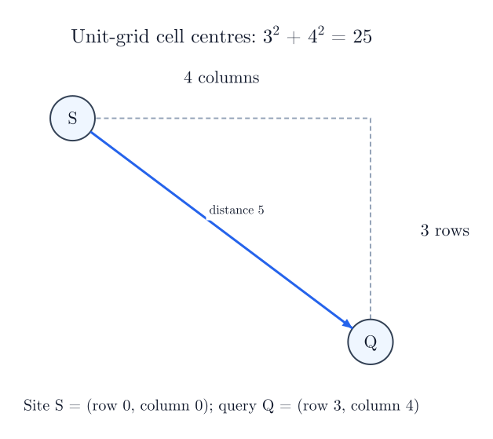
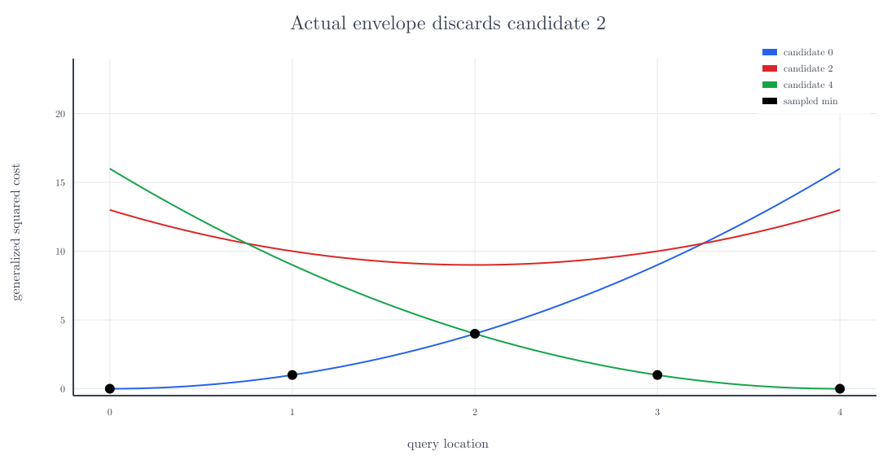
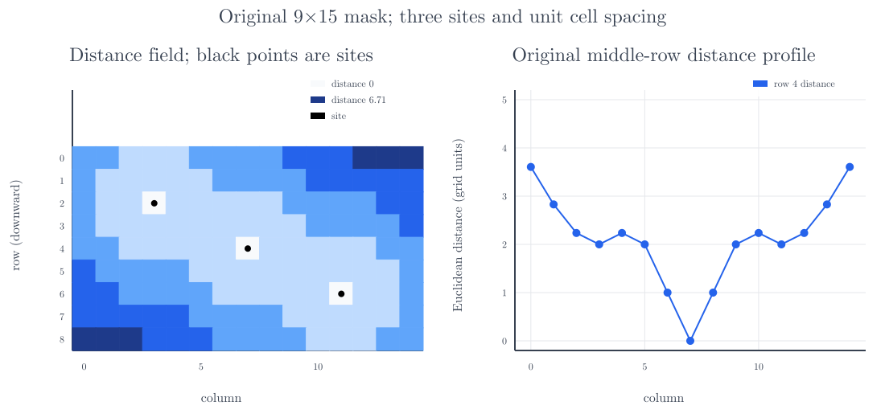
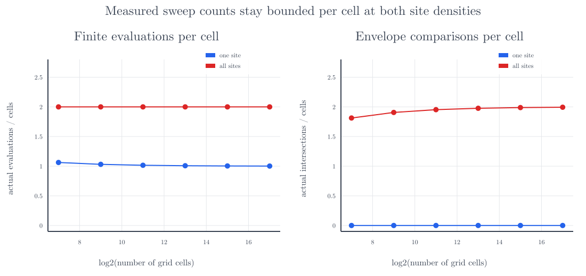
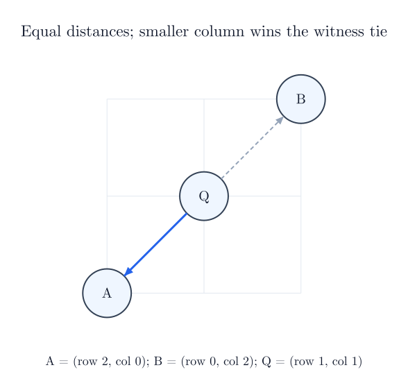

Euclidean Distance Transform: Actual Parabola Envelopes and Nearest Sites
Abstract
Given a rectangular grid with marked sites, we want each cell’s distance to its nearest site and the coordinates of a site attaining that distance. Checking every cell against every site scales poorly as both sets grow. A separable Euclidean distance transform solves the problem through one-dimensional lower envelopes of parabolas. We start with a 3–4–5 triangle, expose an actual discarded parabola and retain the original 9×15 three-site distance field and middle-row profile. The canonical core now handles true infinity, empty rows, rectangular validation and long indices without a finite placeholder or signed integer squares. Exhaustive small-input checks, nearest-site witnesses, explicit tie rules and measured sweep counts distinguish the exact geometric metric from floating-point rounding, image-boundary conventions and obstacle-constrained path lengths.
Begin with a 3–4–5 triangle between cell centres
Mark site (row 0,column 0) in a 4×5 grid. At query (3,4), the squared Euclidean distance is 3²+4²=25, and the distance is five grid units. The selected original site is (0,0). No padding or unmarked outside cell contributes another candidate. A route restricted to horizontal and vertical unit moves would instead cost seven; that is a different distance model.
The returned feature field retains both squared values and nearest-site coordinates. The native diagram uses equal coordinate scales to illustrate the geometry; every printed value comes from the core transform.
#include <dm/dm.hpp>
int main(){
std::filesystem::create_directories("build");const auto grid=dm::geometry::distance_site_grid(4,5,{{0,0}});
const auto f=dm::geometry::euclidean_distance_transform_features(grid);
std::print("Query (3,4): squared {:.0f}; distance {:.0f}; nearest ({},{}).\n\n",f.squared_distance[3][4],f.distance[3][4],f.nearest_row[3][4],f.nearest_column[3][4]);
std::print("| row | squared c0 | c1 | c2 | c3 | c4 |\n| ---: | ---: | ---: | ---: | ---: | ---: |\n");
for(std::size_t r=0;r<4;++r)std::print("| {} | {:.0f} | {:.0f} | {:.0f} | {:.0f} | {:.0f} |\n",r,f.squared_distance[r][0],f.squared_distance[r][1],f.squared_distance[r][2],f.squared_distance[r][3],f.squared_distance[r][4]);
dm::graphics::Diagram d(95,1100);dm::graphics::DiagramStroke legs;legs.dashed=true;legs.color={148,163,184};legs.width=2;
d.path({{0,0},{4,0},{4,-3}},legs);
dm::graphics::DiagramNodeStyle dot;dot.circle=true;dot.width=.6;dot.height=.6;dot.font_size=22;
d.node("site",{0,0},"S",dot).node("query",{4,-3},"Q",dot);
dm::graphics::DiagramStroke blue;blue.color={37,99,235};blue.width=3;
d.edge("site","query",std::format("distance {:.0f}",f.distance[3][4]),blue)
.text({2,.55},"4 columns",22).text({5,-1.5},"3 rows",22)
.text({2,1.1},"Unit-grid cell centres: 3² + 4² = 25",25)
.text({2,-3.85},"Site S = (row 0, column 0); query Q = (row 3, column 4)",20)
.save_svg("build/edt_triangle.svg");
}Query (3,4): squared 25; distance 5; nearest (0,0).
| row | squared c0 | c1 | c2 | c3 | c4 |
|---|---|---|---|---|---|
| 0 | 0 | 1 | 4 | 9 | 16 |
| 1 | 1 | 2 | 5 | 10 | 17 |
| 2 | 4 | 5 | 8 | 13 | 20 |
| 3 | 9 | 10 | 13 | 18 | 25 |

Derive the one-dimensional envelope
For finite sample costs f(p), allow positive infinity to mean no candidate. At each integer q, compute
Every finite p supplies a parabola of the same curvature. Equating the parabolas at p<q and cancelling the shared squared query term gives their crossing
The implementation uses the factored expression with long-double operands, dividing costs before subtraction. It never multiplies signed integer indices. Positive-infinity candidates are skipped, avoiding infinity-minus- infinity arithmetic and the former finite placeholder of 1e20. NaN and negative-infinity costs are rejected; finite negative costs are valid for this generalized minimum-cost transform. They need not describe squared distances and are not square-rooted by the one-dimensional API.
Keep increasing candidate indices and increasing left boundaries. If a new crossing lies at or before the last candidate’s boundary, remove that candidate and compare again. Otherwise append the new candidate. During evaluation, advance the winner pointer only after the next boundary is strictly smaller than the integer query. An exact boundary tie therefore keeps the smaller source index.
Take f=(0,infinity,9,infinity,0). Candidate 2 first enters at 13/4=3.25. Candidate 4 crosses it at 3/4=0.75, before that left boundary, so candidate 2 is removed. Comparing 4 against 0 gives crossing two. The final envelope uses candidates [0,4], and q=2 selects candidate 0 at the exact tie. The table exposes the actual comparisons from that execution.
#include <dm/dm.hpp>
int main(){
std::filesystem::create_directories("build");const double inf=std::numeric_limits<double>::infinity();
const auto t=dm::geometry::squared_distance_transform_1d_trace({0,inf,9,inf,0});
std::print("Final candidates {}; values {}; selected indices {}.\n\n",t.envelope_sites,t.values,t.nearest_index);
std::print("| new candidate | previous candidate | crossing | previous left boundary | removed previous |\n| ---: | ---: | ---: | ---: | :--- |\n");
for(const auto& e:t.comparisons)std::print("| {} | {} | {:.2f} | {:.2f} | {} |\n",e.candidate,e.previous,e.intersection,e.previous_begin,e.removed);
std::print("\nActual work: {} samples, {} finite candidates, {} intersections, {} pushes, {} pops, {} winner advances, {} evaluations.\n",t.work.input_values,t.work.finite_candidates,t.work.intersections,t.work.envelope_pushes,t.work.envelope_pops,t.work.selection_advances,t.work.evaluations);
auto plot=dm::graphics::RPlot::create();const std::vector<dm::graphics::RGB> colors{{37,99,235},{220,38,38},{22,163,74}};
std::size_t series=0;for(std::size_t p:{0u,2u,4u}){std::vector<double> x,y;
for(std::size_t i=0;i<=160;++i){const double q=i/40.0;x.push_back(q);y.push_back(t.costs[p]+(q-p)*(q-p));}
plot.line(x,y,std::format("candidate {}",p),colors[series++]);}
plot.points({0,1,2,3,4},t.values,"sampled min",{0,0,0},6)
.title("Actual envelope discards candidate 2").x_label("query location").y_label("generalized squared cost")
.y_limits(-.5,24).size(1100,570).save_svg("build/edt_envelope.svg");
}Final candidates [0, 4]; values [0, 1, 4, 1, 0]; selected indices [0, 0, 0, 4, 4].
| new candidate | previous candidate | crossing | previous left boundary | removed previous |
|---|---|---|---|---|
| 2 | 0 | 3.25 | -inf | false |
| 4 | 2 | 0.75 | 3.25 | true |
| 4 | 0 | 2.00 | -inf | false |
Actual work: 5 samples, 3 finite candidates, 3 intersections, 3 pushes, 1 pops, 1 winner advances, 5 evaluations.

Why the transform is linear and separable
Let K be the number of finite candidates on one line. Every candidate is pushed once, and any removed candidate is popped once. With K>0, each candidate after the first performs one comparison that ends its search, plus one comparison for every earlier candidate it removes. Thus the actual count is intersections=K−1+pops, bounded by 2K−2. The winner pointer only advances, so its total moves are at most the final envelope length minus one. A nonempty envelope evaluates one parabola per output sample; an all-infinity line has no finite evaluations. Together with the input scan, this gives O(n) time and storage per line.
For a binary site mask, seed cost zero at each site and infinity elsewhere. The squared distance at (r,c) separates:
First transform each column to obtain its vertical squared costs, then transform those rows. A final square root gives Euclidean distance. Nearest-site coordinates follow the same minimizers: the row pass chooses a column and its stored vertical winner supplies the original row. An exact two-dimensional tie chooses the smaller column, then the smaller row. That deterministic convention affects witnesses, not the distance.
For a nonempty shape with R rows, C columns and N=R*C cells, the two passes inspect 2N samples across R+C lines. Finite evaluations are at most 2N. Envelope comparisons remain linear in those inputs, regardless of site count. Shape validation and outer row storage add O(R), including zero-width rows. The ordinary result is an R-by-C distance matrix; optional feature and column-snapshot arrays also use O(N) storage, with O(R+C) line scratch. No per-cell list of all sites is scanned by the transform.
[Felzenszwalb and Huttenlocher’s published account](https://doi.org/10.4086/toc.2012.v008a019) describes the generalized quadratic transform and its separable construction. “Exact Euclidean” identifies the metric and algorithm, rather than an integer chamfer approximation. Intersections use floating arithmetic, output squared costs use double and square roots are rounded. Arbitrarily large or poorly separated weighted costs are not promised arbitrary-precision minimizers.
Retain the original 9×15 three-site field
The original sites are (2,3), (6,11) and (4,7), in (row,column) order. All cells have unit spacing. Nonzero input values mark sites; zero values are ordinary unmarked cells, not automatically exterior background. This educational grid is the complete input, with no external dataset.
The full distance table below retains the original one-decimal field. The heatmap uses downward row labels and a finite colour range, with black points at sites. Display cells are plot rectangles; distances are computed on the unit grid independently of canvas proportions. The right panel retains the original profile along row four. It reaches zero at column seven, while sites in other rows also influence the profile.
#include <dm/dm.hpp>
int main(){
std::filesystem::create_directories("build");
const auto grid=dm::geometry::distance_site_grid(9,15,{{2,3},{6,11},{4,7}});
const auto t=dm::geometry::euclidean_distance_transform_trace(grid);const auto& f=t.result;
std::print("Original grid: 9 rows, 15 columns; sites (2,3), (6,11), (4,7).\n\n| row |");
for(std::size_t c=0;c<15;++c)std::print(" c{} |",c);std::print("\n| ---: |");for(std::size_t c=0;c<15;++c)std::print(" ---: |");std::print("\n");
for(std::size_t r=0;r<9;++r){std::print("| {} |",r);for(double value:f.distance[r])std::print(" {:.1f} |",value);std::print("\n");}
std::print("\nRow 4 distances: ");for(double value:f.distance[4])std::print("{:.1f} ",value);std::print("\n");
std::print("Column pass at query (4,5): {}; final squared cost {:.0f}; witness ({},{}).\n",t.column_squared[4][5],f.squared_distance[4][5],f.nearest_row[4][5],f.nearest_column[4][5]);
std::vector<double> columns;for(std::size_t c=0;c<15;++c)columns.push_back(c);
auto field=dm::geometry::plot_distance_field(f);auto profile=dm::graphics::RPlot::create();
profile.line(columns,f.distance[4],"row 4 distance",{37,99,235}).points(columns,f.distance[4],"",{37,99,235},5)
.title("Original middle-row distance profile").x_label("column").y_label("Euclidean distance (grid units)").y_limits(-.2,5.2);
dm::graphics::RLayout::create(1,2).add(field).add(profile).size(1100,520).title("Original 9×15 mask; three sites and unit cell spacing").fit_panels().save_svg("build/edt_original_field.svg");
}Original grid: 9 rows, 15 columns; sites (2,3), (6,11), (4,7).
| row | c0 | c1 | c2 | c3 | c4 | c5 | c6 | c7 | c8 | c9 | c10 | c11 | c12 | c13 | c14 |
|---|---|---|---|---|---|---|---|---|---|---|---|---|---|---|---|
| 0 | 3.6 | 2.8 | 2.2 | 2.0 | 2.2 | 2.8 | 3.6 | 4.0 | 4.1 | 4.5 | 5.0 | 5.7 | 6.1 | 6.3 | 6.7 |
| 1 | 3.2 | 2.2 | 1.4 | 1.0 | 1.4 | 2.2 | 3.2 | 3.0 | 3.2 | 3.6 | 4.2 | 5.0 | 5.1 | 5.4 | 5.8 |
| 2 | 3.0 | 2.0 | 1.0 | 0.0 | 1.0 | 2.0 | 2.2 | 2.0 | 2.2 | 2.8 | 3.6 | 4.0 | 4.1 | 4.5 | 5.0 |
| 3 | 3.2 | 2.2 | 1.4 | 1.0 | 1.4 | 2.2 | 1.4 | 1.0 | 1.4 | 2.2 | 3.2 | 3.0 | 3.2 | 3.6 | 4.2 |
| 4 | 3.6 | 2.8 | 2.2 | 2.0 | 2.2 | 2.0 | 1.0 | 0.0 | 1.0 | 2.0 | 2.2 | 2.0 | 2.2 | 2.8 | 3.6 |
| 5 | 4.2 | 3.6 | 3.2 | 3.0 | 3.2 | 2.2 | 1.4 | 1.0 | 1.4 | 2.2 | 1.4 | 1.0 | 1.4 | 2.2 | 3.2 |
| 6 | 5.0 | 4.5 | 4.1 | 4.0 | 3.6 | 2.8 | 2.2 | 2.0 | 2.2 | 2.0 | 1.0 | 0.0 | 1.0 | 2.0 | 3.0 |
| 7 | 5.8 | 5.4 | 5.1 | 5.0 | 4.2 | 3.6 | 3.2 | 3.0 | 3.2 | 2.2 | 1.4 | 1.0 | 1.4 | 2.2 | 3.2 |
| 8 | 6.7 | 6.3 | 6.1 | 5.7 | 5.0 | 4.5 | 4.1 | 4.0 | 3.6 | 2.8 | 2.2 | 2.0 | 2.2 | 2.8 | 3.6 |
Row 4 distances: 3.6 2.8 2.2 2.0 2.2 2.0 1.0 0.0 1.0 2.0 2.2 2.0 2.2 2.8 3.6 Column pass at query (4,5): inf; final squared cost 4; witness (4,7).

Measure the sweep work at different site densities
Fix a grid of R=n rows and C=2n columns. With one site, exactly one column has a finite vertical envelope. The column pass considers that single seed, and every row then has one finite candidate. Therefore finite_candidates=R+1, intersections=0 and evaluations=N+R. Most column lines contain no finite candidate, but their input scans still count toward the total 2N values.
With every cell marked, all line costs are zero. Candidates enter in order without pops. The exact counts become finite_candidates=2N, intersections=selection_advances=2N−R−C and evaluations=2N. The program checks those identities at six sizes. Plotting actual counts per cell makes the bounded work visible; the horizontal axis uses log2(N) to show all sizes. These are logical sweep counts, not timing or allocation benchmarks. Finite samples, hull peaks, inspections and output initialization are distinct quantities.
#include <dm/dm.hpp>
int main(){
std::filesystem::create_directories("build");
std::vector<double> x,single_eval,dense_eval,single_cross,dense_cross;
std::print("| rows | columns | pattern | cells | inputs | finite candidates | intersections | evaluations | peak envelope |\n| ---: | ---: | :--- | ---: | ---: | ---: | ---: | ---: | ---: |\n");
for(std::size_t rows:{8u,16u,32u,64u,128u,256u}){const std::size_t cols=2*rows,cells=rows*cols;x.push_back(std::log2(cells));
for(bool dense:{false,true}){const auto grid=dense?std::vector<std::vector<char>>(rows,std::vector<char>(cols,1)):dm::geometry::distance_site_grid(rows,cols,{{rows/2,cols/2}});
const auto t=dm::geometry::euclidean_distance_transform_trace(grid);const auto& w=t.work;
if(w.input_values!=2*cells || w.finite_candidates!=(dense?2*cells:rows+1) || w.intersections!=(dense?2*cells-rows-cols:0) || w.evaluations!=(dense?2*cells:cells+rows))return 1;
std::print("| {} | {} | {} | {} | {} | {} | {} | {} | {} |\n",rows,cols,dense?"all sites":"one site",cells,w.input_values,w.finite_candidates,w.intersections,w.evaluations,w.max_envelope_size);
(dense?dense_eval:single_eval).push_back(static_cast<double>(w.evaluations)/cells);(dense?dense_cross:single_cross).push_back(static_cast<double>(w.intersections)/cells);
}
}
auto p=dm::graphics::RPlot::create(),q=dm::graphics::RPlot::create();
p.line(x,single_eval,"one site",{37,99,235}).points(x,single_eval,"",{37,99,235},5).line(x,dense_eval,"all sites",{220,38,38}).points(x,dense_eval,"",{220,38,38},5).title("Finite evaluations per cell").x_label("log2(number of grid cells)").y_label("actual evaluations / cells").y_limits(-.1,2.8);
q.line(x,single_cross,"one site",{37,99,235}).points(x,single_cross,"",{37,99,235},5).line(x,dense_cross,"all sites",{220,38,38}).points(x,dense_cross,"",{220,38,38},5).title("Envelope comparisons per cell").x_label("log2(number of grid cells)").y_label("actual intersections / cells").y_limits(-.1,2.8);
dm::graphics::RLayout::create(1,2).add(p).add(q).size(1100,520).title("Measured sweep counts stay bounded per cell at both site densities").fit_panels().save_svg("build/edt_linear_work.svg");
}| rows | columns | pattern | cells | inputs | finite candidates | intersections | evaluations | peak envelope |
|---|---|---|---|---|---|---|---|---|
| 8 | 16 | one site | 128 | 256 | 9 | 0 | 136 | 1 |
| 8 | 16 | all sites | 128 | 256 | 256 | 232 | 256 | 16 |
| 16 | 32 | one site | 512 | 1024 | 17 | 0 | 528 | 1 |
| 16 | 32 | all sites | 512 | 1024 | 1024 | 976 | 1024 | 32 |
| 32 | 64 | one site | 2048 | 4096 | 33 | 0 | 2080 | 1 |
| 32 | 64 | all sites | 2048 | 4096 | 4096 | 4000 | 4096 | 64 |
| 64 | 128 | one site | 8192 | 16384 | 65 | 0 | 8256 | 1 |
| 64 | 128 | all sites | 8192 | 16384 | 16384 | 16192 | 16384 | 128 |
| 128 | 256 | one site | 32768 | 65536 | 129 | 0 | 32896 | 1 |
| 128 | 256 | all sites | 32768 | 65536 | 65536 | 65152 | 65536 | 256 |
| 256 | 512 | one site | 131072 | 262144 | 257 | 0 | 131328 | 1 |
| 256 | 512 | all sites | 131072 | 262144 | 262144 | 261376 | 262144 | 512 |

Boundary shapes, tie witnesses and long indices
An empty grid returns empty. A grid containing R empty rows returns R empty rows; it never indexes a zero-length envelope. Ragged grids are rejected before output allocation. If there are no sites, distances remain positive infinity, nearest rows use sentinel R and nearest columns use sentinel C. The true-infinity implementation also handles site-free columns without subtracting infinities. It requires no fixed missing-site constant.
The next tie example places sites at (0,2) and (2,0). Query (1,1) is sqrt(2) from both. The column-first convention selects (2,0), even though the other site has the smaller row. This is a specified witness convention, not a different geometric distance. Without obstacles or a graph of allowed moves, this field does not compute detours around barriers.
The former header squared signed int indices in its intersection formula. A compiled legacy probe reports signed overflow on a 50,001-sample input; a separate zero-width probe fails a vector-index assertion. The new kernel uses size_t indices and converts before arithmetic. A one-row 100,001-cell control now reaches distance 100,000 and squared distance 10,000,000,000 at the far end. Both the original function name/include and the former internal detail::dt_1d spelling forward to the canonical compiled code; normal callers link datamunge as in every report program here.
The one-dimensional trace has an optional complete-sample cap of one million; the grid trace and site-grid builder have optional complete-cell caps of one million. Zero disables only those optional caps; count/container checks still apply. Plotting has a separate default cap of 4096 polygons. The native tests check exact limits and one-short limits before output capture.
#include <dm/dm.hpp>
int main(){
std::filesystem::create_directories("build");
const auto empty=dm::geometry::euclidean_distance_transform_trace({{}, {}});
const auto absent=dm::geometry::euclidean_distance_transform_features({{0,0},{0,0}});
const auto negative=dm::geometry::squared_distance_transform_1d({-4,std::numeric_limits<double>::infinity(),0});
const auto f=dm::geometry::euclidean_distance_transform_features(dm::geometry::distance_site_grid(3,3,{{0,2},{2,0}}));
std::print("Zero-width shape: {} empty rows, {} sweeps. No-site query: distance {}, row sentinel {}, column sentinel {}.\n",empty.result.distance.size(),empty.work.lines,absent.distance[1][1],absent.nearest_row[1][1],absent.nearest_column[1][1]);
std::print("Generalized negative costs produce {} without a square root.\n",negative);
std::print("Tie at (1,1): squared {:.0f}, distance {:.6f}, selected site ({},{}).\n",f.squared_distance[1][1],f.distance[1][1],f.nearest_row[1][1],f.nearest_column[1][1]);
std::size_t rejected=0;
try{(void)dm::geometry::euclidean_distance_transform({{1,0},{}});}catch(const std::invalid_argument&){++rejected;}
try{(void)dm::geometry::squared_distance_transform_1d({std::numeric_limits<double>::quiet_NaN()});}catch(const std::invalid_argument&){++rejected;}
try{(void)dm::geometry::euclidean_distance_transform_trace({{1,0},{0,0}},3);}catch(const std::length_error&){++rejected;}
try{(void)dm::geometry::squared_distance_transform_1d_trace({0,1,2},2);}catch(const std::length_error&){++rejected;}
if(rejected!=4)return 1;std::print("Expected ragged/cost/grid-cap/line-cap rejections: {}.\n",rejected);
const auto long_grid=dm::geometry::distance_site_grid(1,100001,{{0,0}});const auto long_field=dm::geometry::euclidean_distance_transform_features(long_grid);
std::print("Long row: 100001 cells; far distance {:.0f}; squared {:.0f}; witness ({},{}).\n",long_field.distance[0].back(),long_field.squared_distance[0].back(),long_field.nearest_row[0].back(),long_field.nearest_column[0].back());
dm::graphics::Diagram d(140,1100);dm::graphics::DiagramStroke grid;grid.color={226,232,240};grid.width=1;
for(double k:{0.,1.,2.}){d.path({{0,-k},{2,-k}},grid).path({{k,0},{k,-2}},grid);}
dm::graphics::DiagramNodeStyle dot;dot.circle=true;dot.width=.5;dot.height=.5;dot.font_size=20;
d.node("a",{0,-2},"A",dot).node("b",{2,0},"B",dot).node("q",{1,-1},"Q",dot);
dm::graphics::DiagramStroke blue;blue.color={37,99,235};blue.width=3;dm::graphics::DiagramStroke other;other.color={148,163,184};other.dashed=true;
d.edge("q","a","",blue).edge("q","b","",other)
.text({1,.7},"Equal distances; smaller column wins the witness tie",23)
.text({1,-2.7},"A = (row 2, col 0); B = (row 0, col 2); Q = (row 1, col 1)",18)
.save_svg("build/edt_boundaries.svg");
}Zero-width shape: 2 empty rows, 0 sweeps. No-site query: distance inf, row sentinel 2, column sentinel 2. Generalized negative costs produce [-4, -3, 0] without a square root. Tie at (1,1): squared 2, distance 1.414214, selected site (2,0). Expected ragged/cost/grid-cap/line-cap rejections: 4. Long row: 100001 cells; far distance 100000; squared 10000000000; witness (0,0).

What was verified
Native tests exhaust all 87,381 vectors of lengths zero through eight over costs {-2,0,3,infinity}, comparing the kernel and legacy helper spelling against an independent quadratic minimum. They also exhaust all 74,954 binary masks for row and column counts one through four. Direct site search verifies squared distances, rounded square roots, original-site witnesses, the explicit column-first tie rule and every column-pass value. The existing 300 seeded random-grid brute-force checks remain in the suite.
Hand-derived crossings, an actual pop, negative sampled costs, all-infinity lines, empty/zero-width/ragged shapes, nonzero char sites, cap boundaries, invalid costs/sites/counts, owned result copies and bounded plot inputs receive explicit tests. Single-site and all-site work formulas are checked independently of timings. The 100,001-sample/vector and one-row controls cross the old signed-square limit without signed products in the kernel.
The original 9×15 field and row profile remain reproducible from short programs. The new traces explain why the transform is fast and how the returned nearest-site coordinates are chosen. The result measures direct Euclidean centre distance on the supplied unit grid; image padding, anisotropic pixel spacing, geodesic detours and continuous boundary distance would each define a different problem.
References
- P. F. Felzenszwalb and D. P. Huttenlocher (2012), “Distance Transforms of Sampled Functions”, Theory of Computing 8, 415–428. [Published article](https://doi.org/10.4086/toc.2012.v008a019), [author’s open paper](https://cs.brown.edu/people/pfelzens/papers/dt-final.pdf).